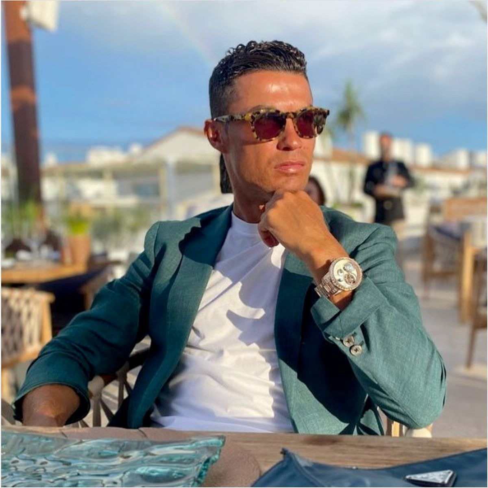

List of Brands Endorsed by Cristiano Ronaldo
Cristiano Ronaldo is one of the greatest players in the history of football. He is considered to be the best player of the game. He is a Portuguese football player who captains the football team and has won 5 Ballon d’Or awards.
Cristiano Ronaldo is one of the most marketable and famous athletes in the world and was ranked to be the highest paid athlete in the year 2016 and in the year 2017 by Forbes and was also regarded as the world’s most famous athletes in the world from 2016 to 2019 by ESPN.
